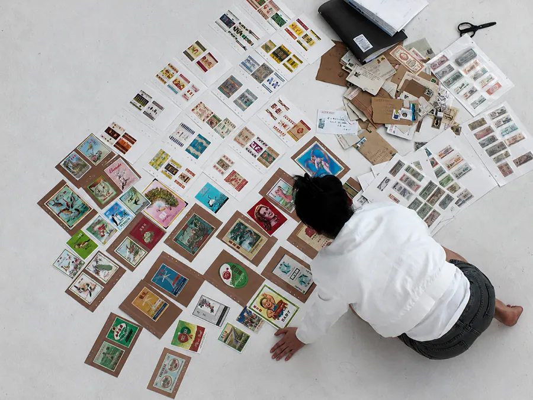

Practice
About
Profile
Working across material, visual and interactive systems, I investigate how rules and relations become perceptible through objects, images and technical processes, and how they may be reorganised across human and machine modes of reading.
My practice combines material inquiry, visual organisation and rule-based prototyping. Through collecting, scanning, making and interaction, I test how different systems shape what can be recognised, compared and acted upon. Current prototypes include interactive web fields, machine-assisted visual analysis, and rule-based interface studies.

Materials
Ration coupons, exchange and supply vouchers, commodity labels and wrappers, practice papers, ink, handmade paper, and responsive interfaces.
Processes
Collecting, provenance and contextual research, documenting, scanning, classifying, regrouping, reprinting, layering, cutting, folding, binding, spatial configuration, and rule-based prototyping.
Current research
After Use
My current project, After Use, develops this inquiry through obsolete twentieth-century Chinese paper ephemera as a culturally specific material field. The working collection is provisionally grouped as commodity labels and wrappers, and ration coupons and exchange or supply vouchers. The project asks what happens to organising relations after the systems that enacted them cease to operate, and how practice-based artistic research can trace and translate them without presenting interpretation as historical fact.
The research moves from material residue and evidential interpretation through artistic translation toward experimental re-operation. Algorithmic mediation remains a conditional method rather than a predetermined outcome: it is retained only where it meaningfully changes decision-making, participation, access, feedback, or the operation of a selected relation.
Questions within the practice
What happens to the organising relations once enacted through obsolete paper-based systems after those systems cease to operate?
How can material, spatial, and embodied artistic processes translate these relations into contemporary encounters without presenting artistic interpretation as historical fact?
Under what conditions can selected relations be translated into operational digital or algorithmically mediated environments, and how might they reshape access, choices, and actions?
Practice-based research
Research framework
Methods
- Corpus construction and evidential protocol
- Contextual tracing and diagnostic reading
- Material, spatial, and embodied translation
- Interactive web, rule-based, and algorithmically mediated prototyping
- Documentation, comparative analysis, and ethics
Current themes
- Obsolete paper-based systems and organising relations
- Commodity presentation, recognition, and value
- Regulated access, allocation, and exchange
- Evidential responsibility and artistic translation
- Participation, agency, feedback, and possible emergence
Selected background
Education
- 2024–2026 The University of Hong KongMBA, part-time · Expected September 2026
- 2015–2018 School of the Art Institute of ChicagoBFA · Visual Communication Design
- 2012–2014 China Academy of ArtUndergraduate study · Environmental Art Design
Contact
For correspondence
- Email wangmengruo00@gmail.com
- Location Shenzhen / Hong Kong